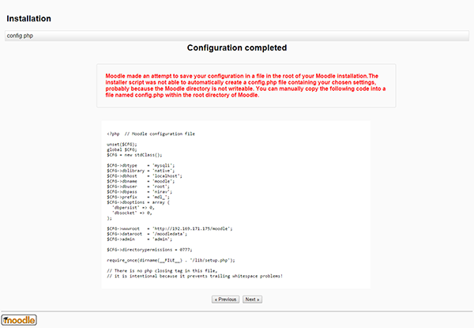
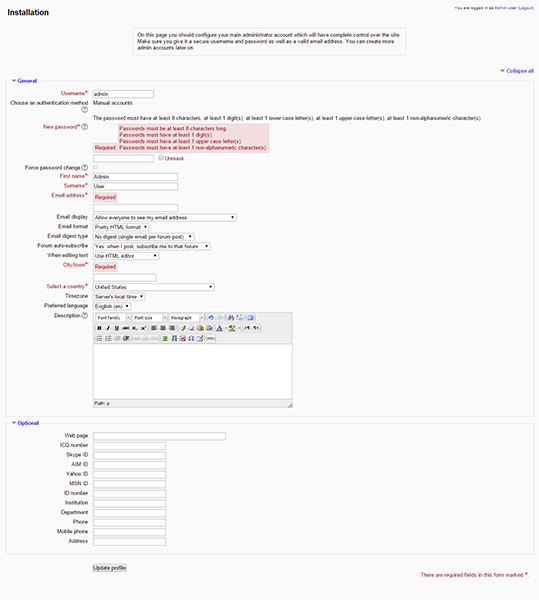
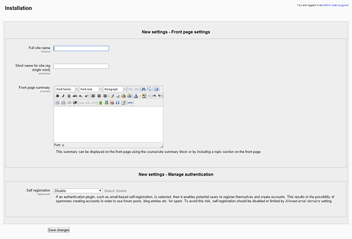

Install and configure Moodle on your LAMP server on Debian and Ubuntu, PHP, Applications
Install and configure Moodle on your LAMP server – Debian, Ubuntu
Difficulty: 1
Time: 30 minutes
Moodle is an acronym for Modular Object Oriented Dynamic Learning Environment. It is an open source Course Management System, that enables the creation of online learning site. Moodle has default features as easy to use interface, personalized dashboard, track progress and many others. In administration, Moodle offers the facility of customizable site design and layout, secure authentication and mass enrolment, bulk course creation and easy backup.
It is assumed that you have sudo priviliges to perform the below mentioned steps. In addition, you need to install and configure LAMP for Debian and Ubuntu. Please refer the below links:
Install the required dependency
- Install curl and GD extensions for Moodle use.
sudo apt-get install php5-curl php5-gd
- Moodle uses
mysqli extension for database manipulation. Install mysqli using the following command:
sudo apt-get install php5-mysql php5-mysqlnd
- Restart the Apache services to make the changes effective.
sudo service apache2 restart
Basic configuration
- Download the Moodle source from the official site by using the following command:
cd /var/www/html
sudo wget http://download.moodle.org/download.php/direct/stable25/moodle-latest-25.tgz
- Extract the downloaded source using the following command:
sudo tar xzvf moodle-latest-25.tgz
- You will find the new directory added in the folder named
moodle.
- To secure
moodle from outside writable permission, change owner to root and change the permission.
sudo chown -R root moodle
sudo chmod -R 0755 moodle
- Moodle needs a folder for its temporary operations and it shouldn’t be accessed from web, so put it outside the server web root. To create it in home directory, use the following command:
sudo mkdir /moodledata
- Make it writeable by the machine:
sudo chmod 0777 /moodledata
Create a database
- Create a blank database for the backend operation.
mysql –u root –p
CREATE DATABASE moodle;
- Exit.
Install Moodle
- Open the browser and type public IP or URL of moodle server as http://public_ip/moodle
- After pressing Enter, you will find the first step of moodle installation process.
- Choose a language as per your need.

- Set the Data directory, that you have created earlier.

- Select a database driver to connect with the database.

To avoid errors, use the driver that the database engine has installed.
- Enter the database credentials to connect with the database.

- Go to the moodle server, create a file
config.php and paste the code that you see in your browser.
cd /var/www/html/moodle
sudo vim config.php
Copy and paste the raw text into file. The browser output will look similar to the below screenshot:

- Save and exit the file by pressing the Esc key and then typing :wq, followed by the Enter key.
Update the site profile
- Update the profile for your site, fill the mandatory information fields and update the profile.

- After updating the profile, you will be redirected to the site settings. Enter your site name.

- After saving the changes, you will be redirected to the home page of Moodle where you can manage your courses and site.
Conclusion
In this article, you learned to install and configure Moodle on your LAMP server with Debian and Ubuntu.